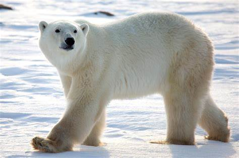

Oso polar (Ursus maritimus)

El paisaje donde habitan es típico de un ambiente de tundra: muy extenso, con áreas planas y otras montañosas, con superficies cubiertas de nieve y, aparentemente, sin rastro de vida. En verano suele verse diferente en algunas zonas, pues las temperaturas más elevadas provocan el deshielo y la entrada a la vida vegetal. El oso polar es un mamífero adaptable a su entorno, pero los cambios de estación también pueden representar un problema con relación con la disponibilidad de alimentos.
Este animal carnívoro se alimenta de focas en un elevado porcentaje, siendo las crías las más frecuentes. No obstante, no rechaza los alimentos que tiene a su disposición. También aprovecha la carne de crías de morsa (aunque no es fácil capturarlas), aves y sus huevos e incluso algas cuando las opciones son escasas, solo que estos últimos no representan un buen alimento. Un adulto sano suele alimentarse meramente de la grasa de las focas, con el fin de tener reservas de grasa. Los osos polares recién nacidos, pequeños y jóvenes se encargan de la carne rica en nutrientes. Realmente son las focas las que les proporcionan las calorías que requieren para mantenerse saludables, seguido de carne de ballena y carne de morsa. Un oso polar llega a comer hasta 30 kg diarios de alimento en circunstancias favorables.
El oso polar es un animal solitario y muy independiente. Aún los expertos en osos polares, señalan que es un animal muy poco predecible y, a veces, sus movimientos pueden confundir a los intrusos, por eso, recomienda que ante el avistamiento de un oso polar, se busque resguardo de inmediato. Este animal suele parecer tranquilo o distraído, pero en un segundo cambia de dirección y de temperamento.